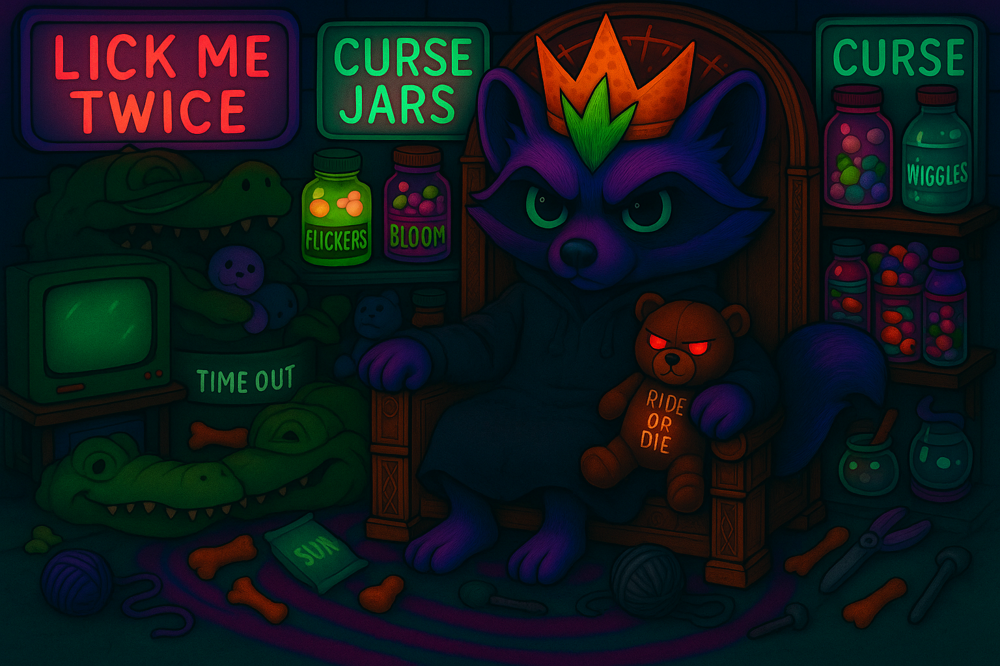

Experimental artifacts appear here when the thread syncs just right. The floor warps slightly when a cursed object lands. So far: cursed keychains, whisper-stuffed plushies, and a Capri Sun from a parallel year.
Captured during peak cosmic sovereignty. Features Moonbug in full stance with Huggy, the Dorito crown ablaze, and her cursed gator throne in frame. Hexes sold separately.
